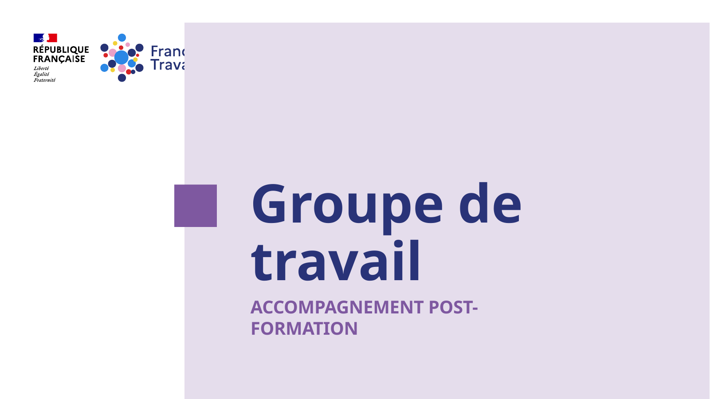
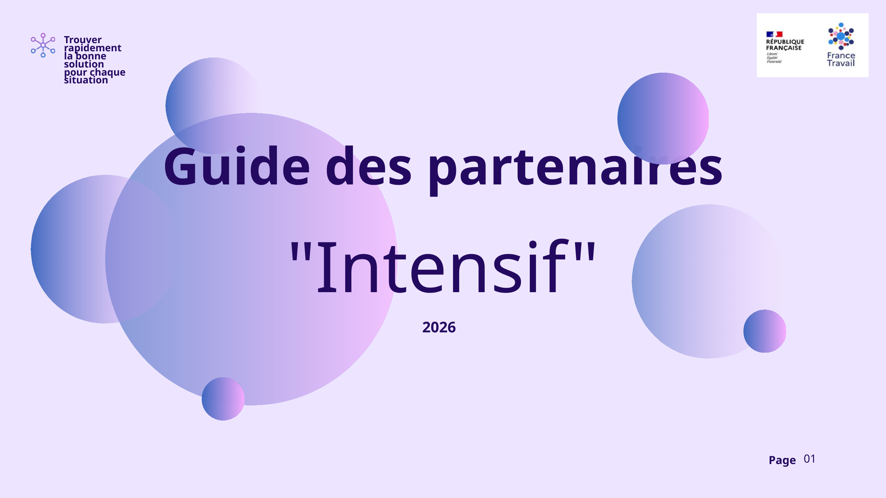
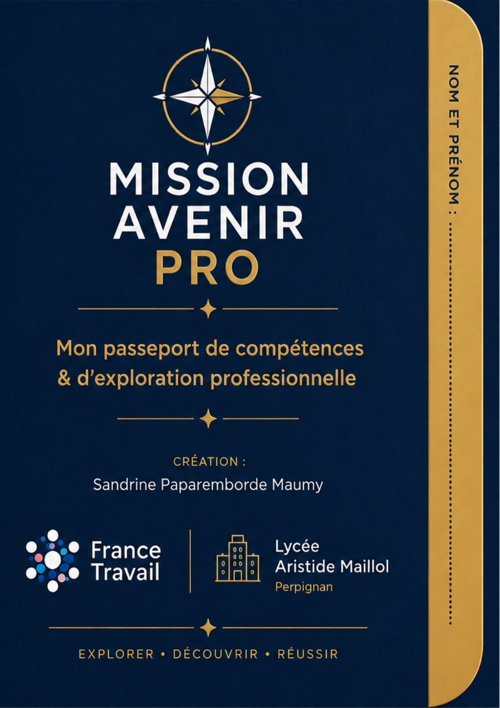
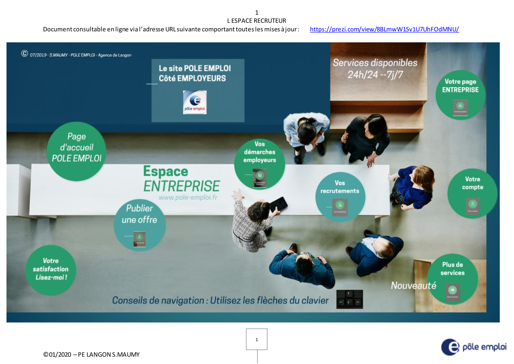
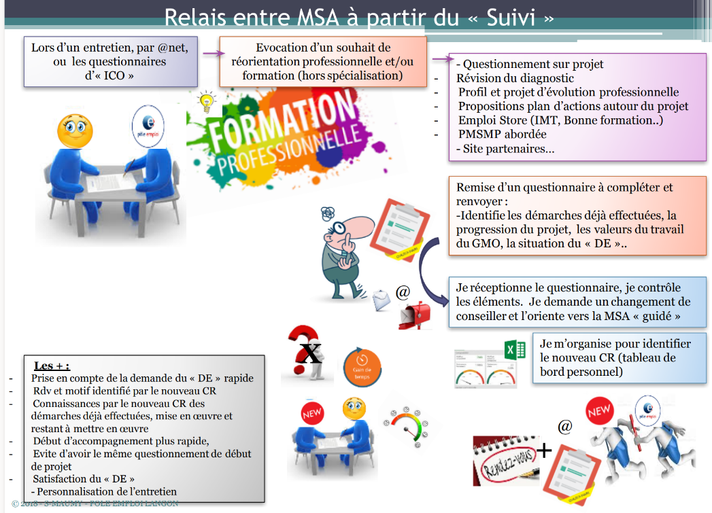
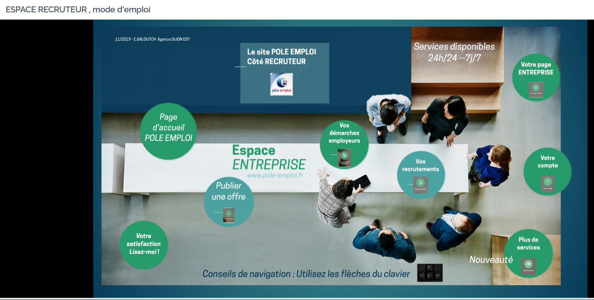
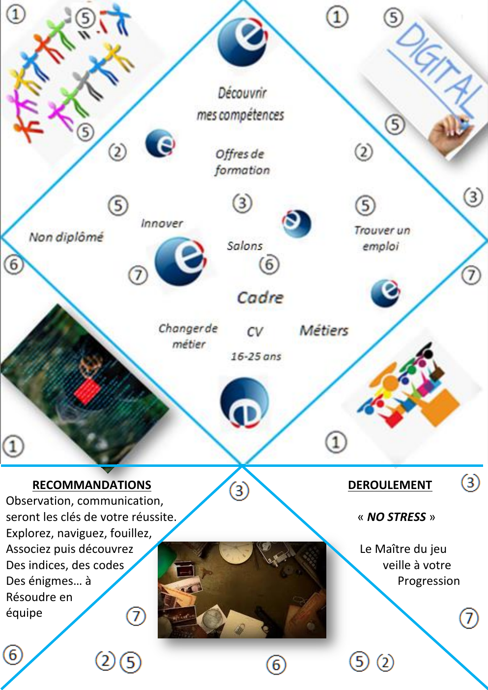

Observer
Écouter le terrain, repérer les irritants et les besoins réels.
Transformer les pratiques pour renforcer l'impact.
Écouter le terrain, repérer les irritants et les besoins réels.
Clarifier le besoin et ce qui limite l’impact.
Identifier les causes, les leviers et les ressources mobilisables.
Transformer le constat en réponse simple, concrète et utile.
Associer les acteurs, donner du sens et susciter l’adhésion.
Expérimenter, accompagner la prise en main et sécuriser la mise en œuvre.
Observer les effets, recueillir les retours et ajuster l’action selon l’impact constaté.
Mes projets ont un périmètre qui s’élargit au fil des années, avec une intention professionnelle constante : améliorer la qualité de service et faciliter les pratiques en interne. Une dynamique qui nourrit aujourd’hui ma vision à 360° de nos services et de leur fonctionnement.

Observer les résultats et repérer les écarts.
Comprendre les 4 points de contrôle.
Mobiliser les référentes formation autour d'un plan d'action.
Mesurer les effets et ajuster.
Un espace partagé pensé pour faciliter l'accès aux événements, offres, métiers, formations et ressources utiles aux jeunes accompagnés.
Une réponse simple à un besoin concret : rendre l'information accessible et favoriser l'autonomie.
Ateliers interactifs, mises en situation et simulations pour préparer concrètement l'entrée dans la vie active.
Une dynamique reconduite qui prépare naturellement Mon Passeport Avenir Pro.
Transformer une matière réglementaire dense en un support clair, structuré et directement utilisable par les conseillers.
Comprendre la règle et ses points de vigilance.
Structurer l'information pour faciliter la lecture.
Rendre accessible pour sécuriser les pratiques.

Des informations dispersées transformées en fiches homogènes, lisibles et orientées usage terrain.
Centraliser l'information utile.
Harmoniser la présentation des prestations.
Faciliter le repérage et la mobilisation par les conseillers.

Un parcours interactif qui prolonge Avenir Pro et permet à l'élève d'explorer, construire, sauvegarder et valoriser sa progression.
L'affiche de présentation, son QR code et son accès cliquable restent associés à cette preuve.

Accompagner le collectif dans la transformation digitale.
Rendre les évolutions digitales lisibles et appropriables par les collègues.
Création d'une lettre d'information régulière, complétée par des ateliers de découverte.
Veille · pédagogie · transmission · accompagnement du changement.
Questionner les pratiques pour améliorer le service.
Des parcours pouvant gagner en personnalisation, fluidité et continuité.
Analyse de l'existant, formalisation d'alternatives, partage de supports et propositions d'organisation.
Autonomie, personnalisation, relation de confiance et efficacité du service.


Rendre l'offre de services entreprise compréhensible et utilisable en autonomie.
Support complet couvrant dépôt d'offre, recherche de profils, recrutements, page entreprise, compte et services associés.
Développer l'autonomie des entreprises dans l'utilisation des services numériques.
Autonomie accrue des recruteurs pour créer leur espace recruteur, leur page entreprise et déposer leurs offres en autonomie. Progression observée sur le terrain, sans mesure chiffrée formalisée à l'époque.

Créer une expérience collective pour découvrir, coopérer et apprendre autrement.
« Travailler ensemble différemment. »
« Innovant et agréable, ça change ! »
« Cohésion d'équipe, agréable. »
Une animation destinée aux conseillers de différentes dominantes, pensée comme un temps de découverte, de coopération et d'appropriation des services.
Développer durablement le pouvoir d'agir de celles et ceux qui composent l'équipe.
Le management n'est pas une rupture avec ma manière d'agir. Il en élargit le périmètre.
Cette sélection complète les projets majeurs présentés en double page. Elle ne constitue pas l’intégralité des réalisations menées.
Partager les évolutions digitales et accompagner leur appropriation par les collaborateurs.
Questionner l’organisation, analyser les difficultés et proposer des pistes d’amélioration.
Faire découvrir autrement, favoriser la coopération et créer de l’adhésion.
Mettre en perspective les pratiques, la dynamique collective et les résultats.
« Innovant et agréable, ça change ! »
« Une bouffée d’air dans notre quotidien. »
« Travailler ensemble différemment. »
« Cohésion équipe. »
Être au plus près du collectif, écouter, faire confiance et créer les conditions pour que chacun puisse contribuer.